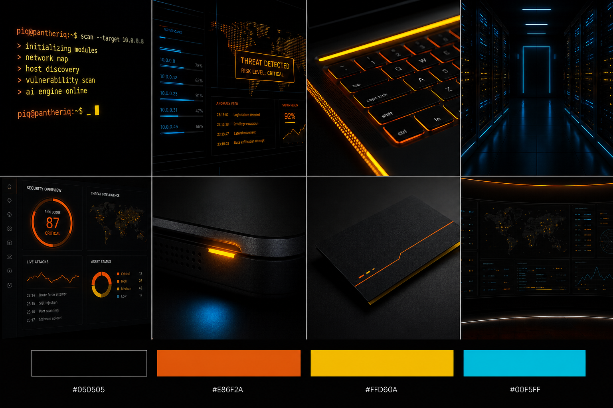

PantherIQ color proposal · CLI cyber mood
Orange command, yellow alert, blue signal.
Example photo-style references for a black terminal brand world with two bright primaries and a cyber-blue support signal. The mood is AI execution, cybersecurity monitoring, and CLI command energy.
